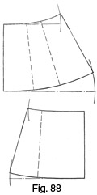

Early 1940's—Ladies' Garment Cutting and Making
by
F. R. Morris
Chapter IX—Skirt Cutting
THERE is to-day a great variety of skirt styles in vogue, for the participation of women in sport in growing numbers means the designing and making of suitable garments for sports wear, and the skirt style is an important factor in the design of every sports suit.
Far from having only the status of a part of a costume, skirts are now designed specially for golfing, motoring, hiking and beach-wear. For golfing and motoring purposes, we have the divided trouser-skirt ideally suited to either pursuit and, in addition, for tennis wear. The beach-wear wrap skirt for wearing over shorts, and the shorts-skirt embodying the features of both garments, are examples of the adaptability of the skirt to present-day needs.
Skirt design generally tends towards simple effects, with more attention paid to perfection of cut and line than to intricate design. Skirts are narrow at the hem line with pleats or slit openings to provide stride room in the case of skirts buttoning down the front or back. The gored skirt with four or more panels has a slight flare at the hem from the knee level downwards, but with this style very little flare must be added, for, unless the material used is very pliable, the hang of the skirt will be distorted. Pleats at the back and front centres disguise the division in a divided sports skirt, and only an expert should be able to tell the difference between this style and an ordinary skirt in wear. For beach wear or cruising, a wrap skirt with a centre front or side button fastening is an indispensable item as it may be worn either as part of a suit or over sports shorts and swimming suit. Many designers feature complete sports suits comprising a jacket with a wrap-skirt and shorts to match.
Skirt-shorts, as their name denotes, are a combination of shorts and skirt with the freedom of the former and the appearance of the latter achieved by the use of pleats and flares. These garments may be made either separately from the body part or in one piece with an opening down the centre front fastened with buttons, or, alternatively, cut with a backless bodice and have buttons down the sideseam to the side plaquet.
Apart from the adoption of the skirt for sports wear, there is little to be said of its use as part of a costume, excepting, perhaps, the vogue of wearing a skirt of contrasting hue under a short or three-quarter length loose-fitting coat.
With regard to the successful cutting of skirts, many of the thoughtless or hasty thinkers imagine this to be a simple operation. In comparison with the cutting of a body garment with the need for fitting two opposing surfaces of the figure form, skirt-cutting may be simple, but only comparatively so.
The same principles of waist suppression apply to a skirt with equal force, only the need for providing a covering in harmony with the figure form is confined to the waist downward to the hips. In the chapter on Waist Suppression, the author described the need for curving the waist and hip balance lines as the garment follows the bending of the trunk from the centre back round to the sides and front. The reason why waist suppression must be systematically applied only at the "bends" of the figure was pointed out, with stress laid upon the fact that suppression at the sideseams must be only moderate in quantity and the majority of the excess surplus between the bust, waist and hip measures be reduced from the "bend" of the figure midway between the sideseam and the centre back.
All these points are applicable to skirt cutting and the author bases his skirt system upon the knowledge obtained from cutting close-fitting coats.
Preliminary to the Basic Principles of Skirt Construction (Fig. 87)
The basis of all skirt systems is the section of the figure from the waist to the hip level. Width of the hem line is of secondary consideration to the need for allocating the waist suppression in its correct location to harmonize with the shape of the figure. Once the waist suppression factor is decided, the alteration for style reasons of the width at the hem line will affect this factor only comparatively. For instance, a perfectly straight-hanging skirt will appear to have a larger quantity of material taken from the waist darts than a skirt of ample width. The increase is illusionary, for the proportion of suppression taken out at each section remains identical in each case.
Fig. 87 (a) illustrates the waist-to-hip section with correct allocation of waist suppression applicable to the section in the square.
For the purpose of examining the cutting of skirts with an analysis of the fundamental principles, the following measures are necessary—
The Waist Measure, taken tightly over the dress or skirt.
The Hip Measure, taken at a point 8 inches below the waist line.
The Skirt Length, at the front, side and back, taken from the waist level to the desired length.
The following drafts illustrating the principles of skirt cutting are based upon the following measures—
- Waist = 25 inches.
- Hips = 38 inches.
- Front length = 27 inches or to fashion.
- Side length = 27½ inches.
- Back length = 27½ inches.
In the chapters on coat cutting the author has stressed the point of suppressing the waist at the sideseam by a standard quantity of ¾ inch. This is all that is necessary to agree with the contour of the figure at this region, as there is no pronounced bend or "round" from the waist downwards to the hip line.
The back waist suppression is decided as two-thirds of the difference between the bust and waist measures, and the front suppression as the remaining one-third. The indentation of the back hollow is far greater in comparison with the front, and needs twice as much extra created length of the sideseam at the side waist to enable the garment to follow the bending of the figure from the centre back to the side and front.
Therefore, when cutting skirts the author adheres to the basic principles of the allocation and proportions of waist suppression as described for coats, with the amendment of an additional increase of ½ inch to the back waist quantity as the need for greater suppression at the back waist hollow becomes apparent with the need for a closer fit to the figure. The closer a garment is required to be fitted to the figure, the greater will be the extent to which the waist and hip balance lines will curve, owing to the increase of suppression taken out.
To construct the draft section from the waist to the hip level as depicted by Fig. 87 (a)—
Square from X.
- 1 from X = 8 inches down from the waist for the hip level.
- Square out from these points.
- 2 from 1 = the half-hip measure plus ½ inch for two seams at the
sideseams.
- No addition has been made for ease of any description, as the author has found that, for modern skirts, measuring over a dress or skirt gives the necessary amount of freedom and ease throughout the draft. Seams are only allowed at the sideseams and at the top of the skirt to simplify cutting when difficult and cut-about designs are required. All additions can then be made for any variation of style without affecting the basic construction of the skirt draft.
- Square up from 2 to 3 to agree with the front construction from X to
1.
- The position of the sideseam may be variably placed either at exactly half the hips circumference or slightly in advance of this point. For skirts that have the same design at back and front the exact sideseam position is correct, while for other styles the sideseam is placed 1 inch in advance of the exact half of the hip measure. This is necessary in order to bring the plaquet fastening towards the front.
- 4 from 1 = half the measure from 1 to 2 less 1 inch.
- Square from 4 to 5 on the waist line.
- Measure up the waist from 3 to 6, adding ½ inch for two seams at the
sideseams.
- Now, as the suppression at the side waist for coats is 3/8 inch, the actual suppression to be taken out of the waist to the hip for a skirt is the 3/8 inch plus the half of the hip overlap which for a normal figure equals ¾ inch. Therefore, the total suppression at the sideseams for the figure size as described equals ¾ inch plus 3/8 inch, 1 1/8 inches in all, and 2¼ inches taken out completely.
- This amount is decided as one-third of the total waist surplus from 6 to X, and is indicated by the position of 7 from 6. 7 from 6 is equal to one-third of 6 to X.
- The back waist suppression has been decided as two-thirds of the waist surplus plus ½ inch and is indicated by the position of 8 and 7. 8 from 7 is equal to two-thirds of 7 to X plus ½ inch.
- The front waist suppression is decided as the remaining third of the surplus and is indicated from 8 to X.
- When the front waist suppression falls below ½ inch, the author disregards the quantity and reduces a little more accordingly from the side-seams to make up the difference.
- 9 and 10 from 5 = the side waist suppression, as shown from 6 to 7. Shape the sideseams from 9 and 10 to the hip point at 4.
- 11 from 3 for the position of the first dart from the centre back = one-sixth of the half-hip measure.
- Square down from 11 to 12.
- 13 from 11 for the position of the second dart equals the same quantity.
- Square down from 13 to 14.
- 15 and 16 from 11 = half of the quantity from 7 to 8.
- Shape out the dart from 15 and 16 to 12.
- 17 and 18 from 13 = the remaining half of the quantity from 7 to 8.
- Shape out the dart from 17 and 18 to 14.
- 19 from 5 = one-sixth of the hip measure for the position of the front waist dart.
- Square down from 19 to 20.
- 21 and 22 from 19 = the quantity as shown from 8 to X.
- Shape out the dart from 21 and 22 to 20.
Fig. 87 (b) shows the hip section after the darts have been sewn out. The curving of the waist and hip balance lines enables the hip section to follow the bending of the figure without distortion.
The Extent of the Curvature of the Balance Lines (Fig. 88)
Fig. 88 indicates the extent of the curvature of the waist and hip balance lines; at the back yoke the curvature is 1¼ inches from the waist line and 2¼ inches from the hip line. The front yoke does not show so great a curving of the balance lines, as from the waist to the hips is practically a straight line without waist indentation. At the waist line a curving of ½ inch is indicated, and at the hip line the curvature is ¾ inch.
To establish a reliable skirt system to give automatic adjustment of the quantities taken from the waist darts as the width of the skirt increases or decreases, we must calculate from one extreme to another, that is to say, we must estimate the quantities of waist suppression in proportion to the varying skirt widths from the point where the skirt shows no increase of width from the straight to where the waist shows no suppression to be taken out in darts and a skirt width in proportion.
Therefore, the system is based upon the hip yoke shape after the darts have been sewn out, giving a full-width skirt with the extra increase of hem circumference in the correct locations as decided by the closing out of the waist darts as shown by Fig. 88.
The System Basis for Skirts (Fig. 89)
Fig. 89 shows the hip yoke with the waist darts sewn out. The point numbers are repeated from the preceding text and draft description.
- Square out from 1 to 6 the half-hip measure plus ½ inch.
- Line from 5 and 4 to locate point 7 as half the distance 1 to 6 less 1 inch from 1.
- Sweep from 6 to 2 and join 2 to 4 as shown.
- Square up from 2 to 8 by point 7.
- 8 from 2 = 8 inches, equal to the distance from X to 1.
- Continue the construction line up from X to 9.
- 9 is squared from 8 by line X to 1.
- 10 from 8 = one-third of the quantity X to 9.
- Line from 10 to follow the angle of the centre back from 3 to 2.
- Continue the sideseam line from 4 and 5 up to intersect the line from 9 to 8 at 11, locating this point at half the distance 9 to 10 less 1 inch from 9.
- Join X to 3 to locate point 12; 5 is definitely located as one-third of the distance X to 9 to complete the systematizing of the draft.
Application of the System Basis in Practice (Fig. 90)
As a further elucidation of the skirt system in practice, Fig. 90 shows the application of the basis draft to the construction of a hip yoke with only a moderate skirt width.
To draft—
Square from X.
- 1 from X = the hip level = 8 inches down from X.
- Square out from 1 to 2 half the hips measure plus ½ inch.
- 3 from 1 is half the distance from 1 to 2 less 1 inch.
- Pivoting from 3, sweep up from 2 to 4 1½ inches. Join 4 to 3, and square up from 4 to 5 the same distance as 1 is from X.
- Square back from 5 to 6 on the line continued up from X.
- 7 from 5 = one-third of the distance from 6 to X.
- Line from 7 through 4 for the centre back line.
- 8 coincides with 7 and is 8 inches from 4.
- Join X to 8 to locate point 9.
- 9 is half X to 8 less 1 inch from X.
- Join 9 to 3 for the sideseam run.
- 10 from 9 = one-third of the distance X to 6.
- Shape the waist seam run of the tops from X to 10 and 8 as shown.
- Measure from 8 to 11 half the waist size plus ½ inch.
- 12 from 11 = one-third of the surplus quantity shown from 11 to X.
- 13 from 12 = two-thirds of the surplus quantity shown from 12 to X plus ½ inch.
- For the position of the first back dart, 14 from 4 = one-sixth of the scale plus ½ inch (the half-hip measure).
- Square down from the waist line to this point, and suppress the dart at 15 and 16 one-half of the distance from 12 to 13.
- Shape the dart for a distance of 7 inches from 15 and 16 to 14.
- 17 from 14 for the position of the second back dart = one-sixth of the scale.
- Square down from the waist line to 17.
- Suppress half the distance from 12 to 13 at 18 and 19.
- Shape out the dart from 19 and 18 to 17 7 inches in length.
- 20 and 21 from 10 = the quantity shown from 11 to 12.
- Shape out the sideseam dart from 20 and 21 to 3.
- 22 from 3 = one-sixth of the scale.
- Square down from the waist line to 22 and suppress the front dart by the quantity shown from 13 to X.
- Shape out the front dart from 24 and 23 to within 2 inches of 22.
- The front dart should not be made too deep. The amount of suppression taken out is not excessive and for style reasons a lengthy dart is unsightly.
This completes the construction of the hip section for a skirt with a narrow-width hem.
A Narrow-width Skirt (Fig. 91)
The accompanying draft is that of a skirt with straight lines and no increase of width in the hem line over the half-hip quantity.
Pleats will be required to be inserted for walking room, either in the form of sewn-in godets or down the centre front and back seams.
Measures are as follows—
- Waist = 25 inches.
- Hips = 38 inches.
- Front length = 27 inches.
- Side length = 27½ inches.
- Back length = 27½ inches.
Square from point X.
- 1 from X = 8 inches down for the hip level.
- Square out from X and 1.
- 2 from 1 = the half-hip measure plus ½ inch.
- Square up from 2 to locate point 3 on the line from X.
- 4 from 1 = half the distance 1 to 2 less 1 inch.
- Square up from 4 to 5.
- 6 from X = the full front length of the skirt plus ¼ inch seam.
- 7 from 3 = the full back length of the skirt plus ¼ inch.
- 8 from 5 = the side length plus ¼ inch.
- Shape the bottom edge run from 6 to 8 and 7.
- Measure up the waist from 3 to 9 plus ½ inch.
- 10 from 9 = one-third of the distance from 9 to X.
- 11 from 10 = two-thirds of the distance plus ½ inch from 10 to X.
- 12 from 2 for the position of the first back dart = one-sixth of the half-hip quantity.
- Square up from 12 to 13.
- Suppress the dart at 14 and 15 from 13 by half the quantity shown from 10 to 11.
- Shape out the dart from 14 and 15 to 12, making the dart 7 inches in length.
- 16 from 12 = one-sixth of the half-hips quantity for the second back dart.
- Square up from 16 to 17.
- Suppress the dart at 18 and 19 from 17 by half of the quantity shown at 10 to 11.
- Shape out the dart from 18 and 19 to 16, making the dart 7 inches in length.
- Suppress at the sideseams from 20 and 21 to 5 by the quantity shown at 9 to 10.
- Shape out the sideseams dart from 20 and 21 to 4, making the run of seams gradual in line.
- 23 from 4 = one-sixth of the half-hip quantity. Square up from 22 to 23 for the position of the front waist dart.
- 24 and 25 from 23 = the quantity shown from 11 to X.
- Shape out the front dart from 24 and 25 to within 2 inches of 22.
- The godet pleats may be inserted in the skirt at the positions indicated by the lines 26 to 27 in the front and 28 to 29 at the back.
- 26 from 6 = 3½ inches.
- 28 from 7 = 4 inches.
- If godet pleats are not required, inverted pleats may be added at the front and back centres with a seam above.
- The length of the pleat should be approximately the same as the godet pleat from 6 to 30.
- 31 from 30 = 1½ inches.
- 32 from 6 = 3½ to 4 inches.
- Square up from 32 to 33, making this length equal to 6 to 31; 34 indicates the crease of the pleat and is equal in length to 6 from 30.
- Shape the pleat from 31 to 34 and 33 as shown.
- The top of the pleat is shaped in this manner, so that in wear there are more support for the pleat and less tendency towards opening than is the case if the pleat is cut square with 30.
- The back pleat is drafted in a similar manner to complete the skirt draft.
Standard-width Skirt Draft (Fig. 92)
Fig. 92 illustrates the draft of a skirt most suitable in width for present-day design. The width of the hem line as drafted forms the basis upon which all variations of seams and designs are superimposed in the following drafts.
Measures are as for Fig. 91.
To draft—
Square from X.
- 1 from X = 8 inches down for the hip level.
- Square out from 1 to 2.
- 2 from 1 = the half-hip measure plus ½ inch.
- 3 from 1 = half the distance from 1 to 2 less 1 inch.
- 4 from 2 = 1 inch. Join 3 to 4 and square up from 4 to 5 the same distance as 1 is from X.
- Square from 5 to 6 on the construction line from X.
- 7 from 5 = one-third of the distance from 6 to X.
- 7 from 4 = 8 inches. Line from 7 to 4.
- Measure down the front skirt length from X to 8 plus ¼ inch.
- Join X to 7 to locate point 9.
- 9 from X = half the distance from X to 7 less 1 inch from X.
- 10 from 9 = one-third of the distance from 6 to X.
- Shape the waist level of the top from X to 10 and 7 as shown.
- Line down from 10 to 11 through 3 the side skirt length plus ¼ inch.
- 12 from 7 = the back skirt length plus ¼ inch.
- Shape the bottom edge run from 8 to 11 and 12.
- Measure from 7 to 13 half the waist size plus ½ inch.
- 14 from 13 = one-third of the distance from 13 to X.
- 15 from 14 = two-thirds of the distance from 14 to X plus ½ inch.
- Suppress the sideseams from 10 to 16 and 17 by the quantity shown from 13 to 14.
- Shape from 16 and 17 to 3 in a gradual run.
- 18 from 4 = one-sixth of the half-hip measure for the position of the first back dart.
- Square down from the waist line to 18 from 19.
- 20 and 21 from 19 = half the quantity shown from 14 to 15.
- Shape out the back dart from 20 and 21 to 18, making the dart 7 inches in length.
- 22 from 18 = one-sixth of the half-hip measure.
- Square down from the waist line at 23 to 22.
- 24 and 25 from 23 = half the quantity shown from 14 to 15.
- Shape out the back dart from 24 and 25 to 22, making the dart 7 inches in length.
- 26 from 3 = one-sixth of the scale.
- Square down from the waist line to 26 and suppress the front dart by the quantity shown from 15 to X at 27 and 28.
- Shape out the dart from 27 and 28 to within 2 inches of 26 to complete the standard draft for skirts.
For increased width in the hem, point 4 is deviated further from 2, the distance from 3 to 4 always remaining the same.
Point 4 cannot be at a greater distance from 2 than half the difference between the waist and hip measures, otherwise the waist girth would be smaller than the measure.
In the drafting of skirts with full-width hems, it will be found, on measuring up the waist from 7 to 13, that after one-third of the surplus has been applied, there is nothing left for the back darts. This is a correct state of affairs, for the increase of width in the hem line takes place at the back and front of the skirt before the sides are affected, since the closing out of the back darts gives the extra width from the hip level at the back to the hem without affecting the sideseams. Only when a very flared skirt is required is flare added to the sideseams by closing out the side waist suppression as indicated by the hip section in Fig. 89.
Panel Skirt Draft (Fig. 93)
Fig. 93 illustrates the draft of a panel skirt. This style has perpetual popularity and is repeated every year in fashion as a basis upon which to vary design by pleats, flares or fancy and diverted seamings. The draft shows a skirt with six gores; in some instances, the sideseam may be dispensed with and the skirt cut with four gores and four panel seams. A straight skirt line is given by the draft, and, to counteract the effects of perspective upon the panel seams, they are slightly wider at the hem than at the hip level. If they were spaced equally all the way down from the hip level to the hem line, a narrowing effect would be apparent as the panels approached the bottom edge.
Measures for the draft are as follows—
- Waist = 27 inches.
- Hips = 40 inches.
- Skirt length at front = 28 inches.
- Skirt length at side = 28½ inches.
- Skirt length at back = 28½ inches.
To draft—
Square from X.
- 1 from X = 8 inches down for the hip level.
- Square out from 1 to 2 the half-hip measure plus ½ inch.
- 3 from 1 = half the distance from 1 to 2 less 1 inch.
- 4 from 2 = 1 inch.
- Join 4 to 3 and square up 8 inches from 4 to 5.
- Square back from 5 to locate 6 in line with points X and 1.
- 7 from 5 = one-third of the distance from X to 6.
- 7 from 4 = 8 inches.
- Join X to 7 to locate point 8.
- 8 from X = half the distance from X to 7 less 1 inch.
- 9 from 8 = one-third of the distance from X to 6.
- Shape the waist line of the tops from X to 7 through 9.
- 10 from X = the front skirt length plus ¼ inch.
- Line from 9 through 3 to 11 the side skirt length plus ¼ inch.
- 12 from 7 = the back skirt length plus ¼ inch.
- Shape the bottom edge run of the skirt from 10 to 11 and 12.
- Measure from 7 to 13 half the waist measurement plus ½ inch.
- 14 from 13 = one-third of the distance from 13 to X.
- 15 from 14 = two-thirds of the distance from 14 to X plus ½ inch.
- 17 and 16 from 9 = the quantity shown from 13 to 14.
- Shape out the sideseams from 17 and 16 to 3 at the hip level and
continue down to 11.
- The width apart of the back panel seams is a matter of personal taste, but it is preferable that the width of the back panel from seam to seam does not appear too wide in comparison with the width of the two side panels.
- For the best effect, the back panel should be slightly wider than the side panels, and so the author calculates as follows. Measure up the distance from 4 to 3 and double the quantity, which gives the width of the back from sideseam to sideseam. Divide the amount registered by three to find the equal widths and then subtract 1 inch from each of the two side panels and add to the centre panel.
- For systematic purposes the back panel from 4 to 18 is made equal to one-sixth of the half-hip measure plus 1 inch.
- Square down from the waist line at 19 to 18.
- 20 and 21 from 19 = half the quantity shown from 14 to 15 plus ¼ inch.
- Shape out the back dart from 20 and 21 to 18.
- As a seam is included in the design from 20 and 21 to 18, the suppression may be taken to the hip level at 18, for there is not the necessity to taper the seam gradually away as in the case of a dart.
- 22 from 18 for the position of the side dart = 3 inches.
- Square down from 23 on the waist line to 22.
- Suppress at 24 and 25 from 23 the remainder of the quantity registered from 14 to 15.
- Shape out the dart from 24 and 25 to 22, making the dart 7 inches in
length as usual.
- It will be noted that an extra amount has been taken from the first back dart. This is advisable when the design has a seam at this point, for the suppression can then be gradually tapered to the hip level.
- 26 from 1 for the width of the front panel = one-sixth of the half-hip measure plus ½ inch.
- Square down from 27 on the waist line to 26.
- 28 and 29 from 27 = the quantity from 15 to X.
- Shape out the front panel seams from 29 and 28 to 26, gradually tapering the seam runs.
- The back panel seam at the hem line is made equal in width to the distance from 18 to 4 plus ½ inch.
- Shape from 18 to 30 as shown to complete the back section.
- The width of the front panel seam at the hem is made equal to the distance from 26 to 1 plus ½ inch.
- Shape from 26 to 31 to complete the front panel seam run.
The widths given are subject to variation as the width of the hem line increases and, in all cases, are governed by the proportion between the centre and side panels as described previously.
Six-gored Skirt with Flared Panel Seams (Fig. 94)
At the present time, the gored skirt with a low-flare effect is very popular and will in all probability continue so for quite a long while. A minimum of flare should only be added to each panel if the material used is tweed of unpliable texture, and not more than 3 inches should be added in any case for tweed skirts.
For skirts made of silk, linen or otherwise pliable materials the amount of flare added may be increased up to 5 inches. In all instances the extent of flare is guided by the design and style tendencies of the moment.
Measures for the draft are as follows—
- Waist = 26 inches.
- Hips = 39 inches.
- Front skirt length = 27 inches.
- Side skirt length = 27½ inches.
- Back skirt length = 27½ inches.
To draft—
Square from X.
- 1 from X = 8 inches down for the hip level.
- 2 from 1 = the half-hip measure plus ½ inch.
- 3 from 2 = 1 inch.
- 4 from 1 = half the distance from 1 to 2 less 1 inch.
- Square up 8 inches from 3 to 5, squaring from line 4 to 3.
- Square from 5 to 6 in line with points X and 1.
- 7 from 5 = one-third of the distance from 6 to X.
- 7 from 3 = 8 inches.
- Join X to 7 to locate point 8.
- 8 from X = half the distance from X to 7 less 1 inch.
- 9 from 8 = one-third of the distance from 6 to X.
- Shape the waist line from X to 9 and 7.
- 10 from X = the front skirt length plus ¼ inch.
- Line from 9 through 4 to 11 the side length of the skirt plus ¼ inch.
- Line from 7 through 3 to 12 the back length of the skirt plus ¼ inch.
- Shape from 10 to 11 and 12 for the bottom edge skirt run.
- Measure from 7 to 13 half the waist measurement plus ½ inch.
- 14 from 13 = one-third of the distance from 13 to X.
- 15 from 14 = two-thirds of the distance from 14 to X plus ½ inch.
- 16 from 3 for the position of the back panel seam = one-sixth of the half-hip measure plus 1 inch.
- Square down from 17 on the waist line to 16.
- Suppress at 18 and 19 from 17 half the quantity shown from 14 to 15 plus ¼ inch.
- Shape out the back panel seam dart from 18 and 19 to 16, tapering gradually as shown.
- 20 from 16 = 3 inches.
- Square down from 21 to 20.
- 22 and 23 from 21 = the remainder of the quantity shown from 14 to 15.
- Shape out the side dart from 22 and 23 to 20, making the dart 7 inches in length.
- Suppress the sideseams from 24 and 25 at 9 by the quantity shown from 13 to 14.
- Shape out the sideseam runs from 24 and 25 to 4 and 11.
- 26 from 1 for the width of the front panel = one-sixth of the half-hip quantity plus ½ inch.
- Square down from 27 on the waist line to 26.
- Suppress at 27 to 28 and 29 the quantity shown from 15 to X.
- Shape the front panel seams from 28 and 29 to 26.
- The width of the back panel at the hem equals ½ inch more than the width from 3 to 16 on the hip line.
- The front panel width from 10 to 31 = the width of the panel from 1 to 26 plus ½ inch.
- Join 16 to 30 and 26 to 31.
- The flare in the skirt panels commences at approximately 14 inches up
from the bottom edge at 32, 33 and 34.
- To add the flare effect, pivot from 32 the length to 31 and sweep from 31 to 35 and 36, making the distance from the vertical to the requirements of the design; in this instance 1½ inches have been added.
- The sideseam and back panel seam are treated in a similar manner to complete the skirt draft.
Wrap Skirt Draft (Fig. 95)
Fig. 95 shows the draft of a one-piece wrap skirt. Such skirts are usually cut the full width of the material, and the wrap-over depends upon what the difference is between the half-hip measure in comparison with the width of the material used. A wrap-over of approximately 12 inches is necessary, and when the hip size is so great that this amount is not obtainable from the material width, the insertion of a sideseam is then necessary.
Wrap-over skirts for beach wear usually are cut away under the wrap, just sufficient being left for a button-stand for fastening, but with a costume skirt there is no fastening of any description, so that ample wrap is essential.
Measures are as follows—
- Waist = 27 inches.
- Hips = 40 inches.
- Front skirt length = 28 inches.
- Side skirt length = 28½ inches.
- Back skirt length = 28½ inches.
To draft—
Square from X.
- 1 from X = 8 inches down for the hip level.
- Square out from 1 to 2 the half-hip measure plus ½ inch.
- It is necessary to mention that the elimination of the sideseam should mean a reduction of the ½ inch added for seams from the overall hip quantity, but, as this type of skirt depends upon the size round for success, the ½ inch is added as usual. A skirt without a definite fastening to keep it in place always needs to be cut easier to size, otherwise every movement will cause a winging-away of the fronts.
- Square up from 2 to intersect the line squared from X at 3.
- 4 from 1 for the position of the side dart = half the distance from 1 to 2 less 1 inch.
- Square up from 4 to 5.
- Measure from 3 to 6 half the waist measurement plus ½ inch.
- 7 from 6 = one-third of the distance from 6 to X.
- 8 from 7 = two-thirds of the distance from 7 to X plus ½ inch.
- 9 from 2 for the position of the first dart = one-sixth of the half-hip measure.
- Square up from 9 to 10.
- 11 and 12 from 10 = half the quantity shown from 7 to 8.
- Join 10 to 9 and shape out the back dart from 11 and 12 to 9, making the dart 7 inches in length.
- 13 from 9 = one-sixth of the half-hip measure.
- Square up from 13 to 14 at the waist line.
- 15 and 16 from 14 = half the quantity shown from 7 to 8.
- Shape out the dart from 15 and 16 to 13, making the dart 7 inches in length.
- 17 and 18 from 5 = the quantity shown from 6 to 7.
- Shape out the side dart from 17 and 18 to 4.
- A seam is allowed each side of this dart, but on each of the other darts no provision has been made for seams, and the darts are sewn-out in the marks.
- 19 from 4 = one-sixth of the half-hip measure.
- Square up from 19 to the waist line.
- In this case the point squared coincides with point 6, so, to eliminate unnecessary additional figures, the front waist suppression will be taken from each side of point 6. Therefore, shape out the dart from 20 and 21 by the quantity shown from 8 to X to 2 inches above 19.
- Line down from X to 22 the front skirt length plus ¼ inch.
- 23 from 3 = the back skirt length plus ¼ inch.
- Shape the bottom edge run of the skirt from 22 to 23.
- 24 from 3 = 1½ inches less than the full width of the material.
- 25 from 23 = the full width of the material.
- Line from 24 to X and to 25 for the wrap-over.
- Line from 25 to 22 to complete the skirt draft.
- In the making-up, the edge of the skirt from 24 to 25 should be slightly drawn in to prevent as much as possible the winging-away of the fronts, a fault common to wrap skirts.
The Corslet Skirt (Fig. 96)
Skirts with high waist-line effects are very fashionable and smart in wear for they accentuate the height and slender appearance of the wearer and permit the wearing of a belt, either of leather or of the same material as the skirt or blouse. The extent the waist line is raised from the natural position should never exceed 3 inches as, after this distance, the figure commences to increase in girth rapidly to the bust, and consequently there is need for increase of circumference at the skirt top.
Included in the draft are instructions on allowing for knife pleats in the back and front panel seams.
Measures are as follows—
- Waist = 28 inches.
- Hips = 40 inches.
- Front skirt length = 28 inches from the natural waist level.
- Side skirt length = 28½ inches taken as above.
- Back skirt length = 28½ inches taken as above.
To draft—
Square from X.
- 1 from X = 8 inches down for the hip level.
- Square out from 1 to 2 equal to the half-hip measure plus ½ inch.
- 3 from 2 = 1 inch.
- 4 from 1 = half the distance from 1 to 2 less 1 inch.
- By line 4 to 3, square up 8 inches from 3 to 5.
- Square from 5 to locate 6 in line with points X and 1.
- 7 from 5 = one-third of the distance from X to 6.
- 7 from 3 = 8 inches.
- Join X to 7 to locate point 8.
- 9 from 8 = one-third of the distance from X to 6.
- Shape the natural waist line from X to 9 and 7.
- Line the front length of the skirt from X to 10 plus ¼ inch.
- Line the side length of the skirt from 9 through 4 to 11 plus ¼ inch.
- Line the back length of the skirt from 7 through 3 to 12 plus ¼ inch.
- Shape the bottom edge run from 10 to 11 and 12.
- Measure from 7 to 13 half the waist measurement plus ½ inch.
- 14 from 13 = one-third of the distance from 13 to X.
- 15 from 14 = two-thirds of the distance from 14 to X plus ½ inch.
- 16 from X = the amount the waist line is required to be raised = 2 inches.
- 17 from 9 = 2 inches.
- 18 from 7 = 2 inches.
- Shape the top of the skirt from 16 to 17 and 18.
- Shape out the side darts from 9 to 20 and 19 by the quantity shown from 13 to 4.
- Shape from 20 and 19 to 22 and 21, making these two points ¼ inch less apart than 19 from 20.
- 23 from 3 = one-sixth of the half-hip measure plus ½ inch.
- Square down from 24 on the natural waist line to 23.
- Suppress the back panel seams at 25 and 26 from 24 by half the quantity shown from 14 to 15 plus ½ inch.
- 27 from 28 = ¼ inch less than the distance from 25 to 26.
- Shape out the back panel dart from 27 to 25 and 23 and from 28 to 26 and 23.
- 29 from 23 = 3 inches.
- Square down from 30 to 29 for the position of the second back dart.
- 31 and 32 from 30 = the remainder of the quantity shown from 14 to 15.
- 33 and 34 are ¼ inch less apart than the distance from 31 to 32.
- Shape out the back panel dart from 33 and 34 to 31 and 32 to 29, making the dart 7 inches in length from 30.
- 35 from 1 = one-sixth of the half-hip measure plus ½ inch.
- Square down from the waist line at 14 to 35.
- Suppress 36 and 37 from 14 equal to the distance from 15 to X.
- 38 from 39 = ¼ inch less than the distance from 36 to 37.
- Shape out the front panel dart from 38 and 39 to 36 and 37 to 35 as shown.
- 40 from 10 for the width apart of the front panel seams at the hem line = ½ inch more than the distance from 1 to 35.
- 41 from 12 for the width apart of the back panel seams = ½ inch more than the distance from 3 to 23.
- Join 35 to 40 and 23 to 41.
- 42 from 40 for the length of the front pleat = 14 inches.
- Mark up from 42 to 43 1½ inches.
- 44 from 42 = 2½ to 3 inches for the depth of the pleat.
- Square down from 44 to 46.
- 45 from 42 = the same quantity as 42 to 44.
- Square down from 45 to 47 and complete the pleat from 44 and 45 to
43.
- The back pleat is marked from 49 to 50, 51, 52 and 53 in an identical manner as the front pleat.
- Seams are required to be added at the front and back panel seams and pleats.
Skirt Draft with a Hip Yoke (Fig. 97)
The following draft illustrates the treatment of a skirt design with a hip yoke required in one piece without waist darts. The design chosen has a 6-inch hip yoke terminating in a point at the front centre with an inverted pleat set in the front seam.
Measures are as follows—
- Waist = 27 inches.
- Hips = 39 inches.
- Front skirt length = 28 inches.
- Side skirt length = 28½ inches.
- Back skirt length = 28½ inches.
To draft—
Square from X.
- 1 from X = 8 inches down for the hip level.
- Square out from 1 to 2 the half-hip measure plus ½ inch.
- 3 from 2 = 1 inch.
- 4 from 1 = half the distance from 1 to 2 less 1 inch.
- By line 4 to 3, square up to 5 from 3 8 inches.
- Square back from 5 to locate 6 in line with points X and 1.
- 7 from 5 = one-third of the distance indicated by 6 to X.
- 7 from 3 = 8 inches.
- Join 7 to 3.
- Join X to 7 to locate point 8.
- 8 from X = half the distance from X to 7 less 1 inch.
- 9 from 8 = one-third of the distance from X to 6.
- Shape the waist line from X to 9 and 7.
- Line down from X to 10 the front skirt length plus ¼ inch.
- Line down from 9 to 4 and 11 the side skirt length plus ¼ inch.
- Line down from 7 through 3 to 12 the back skirt length plus ¼ inch.
- Shape the bottom edge run from 10 to 11 and 12.
- 13 from 7 = the half-waist measure plus ½ inch.
- 14 from 13 = one-third of the quantity from 13 to X.
- 15 from 14 = two-thirds of the quantity from 14 to X plus ½ inch.
- Suppress the sideseams from 9 to 16 and 17 by the quantity shown from 13 to 14.
- Shape the sideseams from 16 and 17 to 4 and continue to 11 at the hem line.
- 19 from 17 = 6¼ inches. Square from 19 to 20 6 inches, and mark down to 18, ¾ inch below point 1.
- 22 from 7 = 6¼ inches. Mark the back yoke from 21 to 22.
- 23 from 22 = one-sixth of the half-hip measure.
- 24 from 23 = one-sixth of the half-hip quantity.
- Square down from 25 to 23 from the waist line.
- Square down from the waist line at 26 to 24.
- Suppress the first back dart from 25 to 27 and 28 by half the quantity shown from 14 to 15.
- Shape out the back dart from 27 and 28 to 23 as shown.
- Suppress the waist dart from 26 to 29 and 30 by half the quantity shown from 14 to 15.
- Shape out the dart from 29 and 30 to 24 as shown.
- Square down from 31 at the front waist to 20 where the yoke seam is diverted to the centre front seam.
- Suppress the front dart equal to the distance from 15 to X, and shape out to 20 as shown.
- The centre front pleat is made 14 inches in length from 10 to 34.
- 35 from 34 for the extension of the pleat as a means of keeping it in position = 1½ inches.
- The width of the pleat is made from 3½ to 4 inches.
- 37 from 35 = 10 to 36.
- 38 is midway of 35 to 37 and 39 is midway of 10 to 36.
- Complete the draft by marking the crease of the pleat from 38 and 39 and from 38 to 35 and 37.
- To cut the hip yoke in one piece, cut out the front hip section from X to 17, 19, 20 and 18, and then close out the front dart as shown by the smaller diagram.
- Treat the back section in a similar manner by cutting from 16 to 7, 22 and 21, and then close out the first and second darts as indicated by the smaller diagram.
- When cutting from the material, it is necessary to add seams round the back and front hip yokes from 22 to 21 and 19 to 20 and 18.
- Add a seam on the skirt section from 22 to 21 and from 19 to 20 and 18. Add a seam down the front centre seam from 18 to 35 and from 37 to 36.
Another Example of Hip-yoke Construction (Fig. 98)
Fig. 98 illustrates an example of skirt construction with a hip yoke cut in one with the panels, instead of being a separate factor. The skirt panels have a slightly flared effect at the hem line, and, for the purpose of designs where the back and front panels are required to be of equal shape and size, the side-seam is placed exactly in the centre of the draft; otherwise with the sideseam in the usual position, the widths of the panels would necessarily be of unequal proportions.
Measures are as follows—
- Waist = 25 inches.
- Hips = 38 inches.
- Front skirt length = 27 inches.
- Side skirt length = 27½ inches.
- Back skirt length = 27½ inches.
To draft—
Square from X.
- 1 from X = 8 inches down for the hip level.
- Square out from 1 to 2 half the hip measure plus ½ inch.
- 3 from 2 = 1 inch.
- 4 from 1 = half the distance from 1 to 2 less 1 inch.
- By the line 4 to 3, square up from 3 to 5 the distance from X to 1.
- Square back from 5 to 6.
- 7 from 5 = one-third of the distance from X to 6.
- 7 from 3 = 8 inches.
- Join X to 7 to locate point 8.
- 8 from X = half the distance from X to 7 less 1 inch.
- 9 from 8 = one-third of the distance from X to 6.
- Shape the waist line from X to 9 and 7.
- 10 from X = the front skirt length plus ¼ inch.
- Line from 9 through 4 to 11 the side skirt length plus ¼ inch.
- Line from 7 through 3 to 12 the back length plus ¼ inch.
- Shape the bottom edge run from 10 to 11 and 12.
- 13 from 7 = the half-waist measure plus ½ inch.
- 14 from 13 = one-third of the distance from 13 to X.
- 15 from 14 = two-thirds of the distance from 14 to X plus ½ inch.
- Suppress the sideseams from 16 and 17 from 9 by the quantity shown at 13 to 14.
- Shape the sideseams from 16 and 17 to 4.
- 18 from 3 = one-sixth of the half-hip measure plus ½ inch.
- Square down from 19 on the waist line to 18, and suppress the back dart at 20 and 21 from 19 by half the quantity shown from 14 to 15 plus ½ inch.
- 22 from 18 = 3 inches.
- Square down from 23 on the waist line to 22, and suppress the back dart by the remainder of the quantity registered from 14 to 15.
- Shape out the dart from 24 and 25 to terminate on the hip-yoke seam.
- 26 from 1 = one-sixth of the half-hip measure plus ½ inch.
- Square down from 14 on the waist line to 26, and suppress the front dart at 27 and 28 from 14 by the quantity shown from 15 to X.
- Shape out the dart from 27 and 28 to terminate at the point of the hip yoke.
- 29 from 16 = 3½ inches.
- 30 from 14 = 6½ inches.
- 31 from 17 = 3½ inches.
- 32 from 19 = 6½ inches.
- Shape the hip-yoke seams from 30 to 29 and 31 to 32.
- 33 from 10 = the width of the panel seam at the hem line = ½ inch more than 1 to 26.
- 34 from 12 = ½ inch more than the distance from 3 to 18. Line from 34
to 32.
- The flare commences at 14 inches up from points 33, 11 and 34, and 1½ inches are added to 38 and 39, 40 and 41, 42 and 43.
- The hip yoke is formed by cutting up the front panel seam from 38 and 39 to 30 and 29. The front dart is then closed out to form the yoke as shown by the lower right diagram. Cut up the back panel from 42 and 43 to 32 and 31 and then close out the back darts to achieve the back panel as shown by the lower left diagram.
- Seams are to be added round each of the panel seams from 31 to 32 to 42 and 43 and from 29 to 30 and 39 and 38, to complete the draft.
The Trouser-skirt (Fig. 99)
Fig. 99 illustrates the draft of a new style of sports skirt, the trouser-skirt. This garment, as its name implies, is a combination of a skirt with a trouser-leg effect. For a successful trouser-skirt, there must be ample ease of stride room for walking so that the fact of the garment being bifurcated is not too apparent.
Pleats are usually inserted at the centre back and front to disguise the break of the legs and, in the making, should be stitched down to below the fork level. The most important point to keep in mind is the need for ample fork width to give ease of movement, otherwise the trouser-skirt is based upon the standard skirt basis with additional overall ease.
To eliminate a centre front seam down the fronts from the waist line, a short hip yoke is included in the design at back and front.
Full measures are as follows—
- Waist = 25 inches.
- Hips = 38 inches.
- Front and back skirt length = 27 inches.
An additional measure to be taken is the height of the body-rise. This is taken with the wearer seated upon a chair and measured from the seat level to the position in the waist line where the skirt is required to be worn. For an average figure, the height of the body-rise varies from 11 to 12½ inches. In this instance, a rise of 11½ inches is taken.
To draft—
Square from X.
- 1 from X = 8 inches below for the hip level.
- Square out 1 to 2 half the hip measure plus 1 inch, an increase of ½ inch over the skirt basis.
- 3 from 2 = 1 inch.
- 4 from 1 for the position of the sideseam = half the distance from 1 to 2 less 1 inch.
- By line 4 to 3, square up 8 inches from 3 to 5.
- Square back from 5 to locate 6 in line with points X and 1.
- 7 from 5 = one-third of the distance from 6 to X.
- Join X to 7 to locate point 8.
- 8 from X = half the distance from X to 7 less 1 inch.
- 9 from 8 = one-third of the distance from 6 to X.
- Shape the waist line from X to 9 and 7.
- Line down from X to 10 the skirt length plus ¼ inch.
- Line down from 9 through 4 to 11 the side skirt length.
- Line from 7 through 3 to 12 the back skirt length.
- Shape the bottom edge run from 10 to 11 and 12.
- 13 from X = the body-rise length = 11½ inches plus ¼ inch.
- 14 from 13 = ½ inch.
- This ½ inch is added down the fronts so that the pleats do not gape open in wear.
- Line down from X to 14 and 15.
- By line X to 15, square up from 14 to 16 one-sixth of the half-hip measure plus ½ inch.
- Shape the centre-front seam and fork run from X to 16 as shown, curving the fork run to within 2 inches of 14.
- 17 from 15 = 14 to 16 plus ½ inch.
- Shape from 17 to 15 and the inside leg seam from 16 to 17.
- 18 from 7 = the body-rise measure equal to X to 13 at the front.
- 19 from 18 = ½ inch.
- Line from 7 through 19 to 20.
- 20 from 19 = the leg length as applied from 18 to 12.
- Square up from 19 to 21, squaring from line 19 to 20 one-sixth of the half-hip measure plus ½ inch.
- 22 from 21 = 2½ inches always.
- 23 from 20 = 19 to 22 plus ½ inch.
- 23 from 22 = 19 to 20.
- Shape the back seam and fork run from 7 to 22 as shown, hollowing the fork run to within 2½ inches of point 19.
- Shape the inside-leg seam from 22 to 23 and from 23 to 20.
- Measure from 7 to 24 half the waist measurement plus ½ inch.
- 25 from 24 = one-third of the distance from 24 to X.
- 26 from 25 = two-thirds of the distance from 25 to X plus ½ inch.
- 27 from 3 for the position of the first back waist dart = one-sixth of the half-hip measure from 3.
- Square down from 28 on the waist line to 27.
- Suppress the dart from 28 to 29 and 30 by half the quantity shown from 25 to 26.
- Shape out the back dart 6 inches in length from 29 and 30 to terminate at the hip yoke.
- 31 from 27 = one-sixth of the half-hip measure.
- Square down from 32 to 31.
- Suppress the dart from 32 to 33 and 34 by half the quantity shown from 25 to 25.
- Shape out the dart from 33 and 34 6 inches in length to terminate at the hip yoke.
- Suppress the sideseams from 9 to 35 and 36 by the quantity shown from 24 to 25.
- Shape the sideseams from 35 and 36 to 4 and 11 at the bottom edge.
- Suppress, the front dart at 37 to 38 by the quantity shown from 26 to X.
- The hip yoke is made 6 inches in depth from 7 to 39, 35 to 40, 36 to 41 and 6½ inches from X to 43.
- 42 from 41 = 6½ inches, and is 3½ inches from the waist line.
- Shape the yoke from 43 to 42 and 41, and from 40 to 39.
- The front dart from 37 to 38 terminates at the yoke seam at point 44.
The Addition of Pleats (Fig. 100)
The addition of pleats at the front and back centre seams is illustrated by Fig. 100. The success of a divided trouser-skirt depends mainly upon the pleats set in at the centre front and back, without which the garment would bear no resemblance to a skirt and appear as a widely-cut pair of short trousers! The pleats are actually inserted where the fork seam commences to curve under the body, and in wear resemble inverted pleats. The pattern is now cut through down the centre front from the point where the front yoke terminates at point 43, and a quantity of 8 inches is let in to form one-half of the pleat. Fig. 100 shows how this takes place, and the top of the pleat is shaped to a point to enable it to be sewn in with the yoke seam. The pleat is folded back from 43 to 43 and 15 to 15, and a good plan is to edge-stitch the folds of the pleat to stop them from coming out of shape. After both sides of the fronts have been treated as above, the fork seam from 43 to 16 is then sewn together, and the two edges of the pleats as indicated by line 43 to 15 are sewn together for a depth of approximately 6 inches or to just below the commencement of the leg seam.
The front yoke dart is closed out from 37 to 38 and 44 (Fig. 99) and is shown in the finished position ready for adding a seam from 41 to 42 and 43. A seam is also added to the skirt from 41 to 42 and 43.
The back skirt is treated in a similar manner to the front; the back waist darts from 28 and 32 to 27 and 31 respectively are shown in a closed-out position ready for the addition of seams, and 4 inches have been added to form the back centre pleat from 39 to 20. This pleat is folded over and sewn together in exactly the same way as the front, and, when the skirt is finished, no suspicion of a break in the skirt front or back should be apparent. The skirt should fit and hang as well as an ordinary skirt. The fork shape and length from front to back gives the necessary ease for walking and movement generally.
Panel-front Skirt with Inverted Pleats (Fig. 101)
Fig. 101 shows the draft of a plain costume skirt with a front panel with inverted pleats set in the seams. The draft also illustrates two methods of cutting inverted pleats from the material.
Measures for the draft are as follows—
- Waist = 34 inches.
- Hips = 42½ inches.
- Front skirt length = 30 inches.
- Side skirt length = 30½ inches.
- Back skirt length = 30½ inches.
To draft—
Square from X.
- 1 from X = 8 inches for the hip level.
- 2 from 1 = half the hip measure plus ½ inch.
- 3 from 2 = 1 inch.
- 4 from 1 = half the distance from 1 to 2 less 1 inch from 1.
- Join 3 to 4, and square up 8 inches from 3 to 5.
- Square from 5 to locate 6 in line with points X and 1.
- 7 from 5 = one-third of the distance from X to 6.
- 7 from 3 = 8 inches.
- Join 7 to 3 and continue the centre back line through to the hem.
- 8 from X = half the distance from X to 7 less 1 inch.
- 9 from 8 = one-third of the distance from X to 6.
- Shape the waist seam from X to 9 and 7.
- Line down from X to 1 and 10 the front skirt length plus ¼ inch.
- Line down from 9 to 4 and 11 the side length plus ¼ inch.
- Line down from 7 to 3 and 12 the back skirt length plus ¼ inch.
- Shape the bottom edge run from 10 to 11 and 12.
- Measure up the waist from 7 to 13 half the waist size plus ½ inch.
- 14 from 13 = one-third of the distance from 13 to X.
- 15 from 14 = two-thirds of the distance from 14 to X plus ½ inch.
- Suppress the sideseams from 9 to 16 and 17 by the quantity shown from 13 to 14.
- Shape the sideseams from 16 and 17 to 4 and 11.
- 18 from 3 = one-sixth of the half-hip measure.
- Square down from 19 on the waist line to 18.
- Suppress the back dart from 19 to 20 and 21 by half the distance from 14 to 15.
- Shape the dart from 20 and 21 7 inches in length to 18.
- 22 from 18 = one-sixth of the half-hip measure.
- Square down from 23 on the waist line to 22.
- Suppress the dart from 23 to 24 and 25 by half the distance from 14 to 15.
- Shape the dart from 24 and 25 7 inches in length to 22.
- The front panel is made 4 inches in width from 1 to 26.
- 27 from 10 = ½ inch more than the distance from 1 to 26.
- Join 26 to 27 for the front panel seam.
- 28 from X = ¼ inch less than the distance from 1 to 26.
- 29 from 28 = the distance from 15 to X. Shape the front panel seam suppression from 28 and 29 to 26.
- 30 from 27 for the length of the front pleat = 15 inches.
- 31 from 30 = the usual 1½ inches extension.
- Square out 4 inches from 31 to 32.
- Mark the pleat from 32 to 33 at the hem line, making 33 from 27 4 inches.
- 34 to 35 marks the centre fold of the pleat. Shape the top of the pleat as shown.
- 36 from 31 = 4 inches. Square down from 36 to 37 and then mark the fold of the pleat midway between 31 and 36 at 38 and midway between 27 and 37 at 39.
- Shape the top of the pleat from 31 to 38 and 36 to complete the skirt draft.
Cutting Pleats from the Material (Fig. 102)
Fig. 102 shows the usual method adopted for cutting inverted pleats from the material. Fig. 102 (A) illustrates the front panels with the additions for the pleat placed together to form a whole front piece. The centre front of the skirt is placed to the fold of the material and the whole section cut out in one piece, after allowing seams round each panel seam.
This method may prove to be expensive with regard to the length of material used, and an alternative method of cutting inverted pleats is shown by Fig. 102 (B). In this instance, the addition for the pleat is made unequally as indicated, with three-quarters of the pleat added to the side panel and the other quarter added to the front panel, the pleat being sewn together at the fold. By adding the pleat in this way, it is possible to vary the layout of the pattern when cutting from the material to a greater extent than is possible with the first example. The seam of the pleat need not necessarily be placed in the fold on the front panel; it may be transferred to the fold of the side panel from 38 to 39, but in no instance must the seam be placed down the centre of the pleat, as it will show in wear.
 The Shorts-skirt (Fig. 103)
The Shorts-skirt (Fig. 103)

The shorts-skirt has become very popular in tennis circles as a garment that gives the freedom of shorts with the grace of a skirt. As in the trouser-skirt, pleats at the centre back and front hide the fork seam, and additional pleats at the side of the back and front give a graceful appearance and freedom of movement.
Rightly, as these garments are only suitable for the young and slender, the draft is arranged to agree with the following measures—
- Waist = 25 inches.
- Hips = 36 inches.
- Body-rise = 11 inches.
- Sideseam length = 17½ inches.
To draft—
Square from X.
- 1 from X = the hip level = 8 inches below the waist.
- Square out from 1 to 2 the half-hip measure plus 2 inches.
- 3 from 2 = 1 inch.
- 4 from 1 = half the distance from 1 to 2 less 1 inch.
- Join 4 to 3 and by this line square up from 3 to 5 the distance from 1 to X, i.e. 8 inches. Square from 5 to locate 6 in line with points X and 1.
- Join X to 5 to locate point 7.
- 7 from 5 = one-third of the distance from X to 6.
- 8 from X = half the distance from X to 7 less 1 inch from X.
- 9 from 8 = one-third of the distance from X to 6.
- Shape the waist line from X to 9 and 7.
- Continue the construction line from X to 1 to 10, the length of the body-rise, i.e. 11 inches.
- Continue down to 11 from X, the full length of the shorts, i.e. 17½ inches plus a ¼ inch seam.
- 12 from 10 = ½ inch.
- Line through from X to 12 and 13 equal to the distance from X to 10 and 11.
- By line X to 13, square out from 12 to 14 one-sixth of the half-hip measure plus ½ inch.
- 15 from 13 = the distance from 12 to 14 plus ¼ inch.
- 15 from 14 = 12 to 13.
- Shape the fork seam run from X to 14, hollowing the fork seam to within 2 inches of point 12.
- Shape the inside leg seam from 14 to 15.
- Continue the line from 7 through 3 to 16, the length of the body-rise equal to 10 from X.
- 17 from 7 = the length from X to 11.
- 18 from 16 = ½ inch.
- Line from 7 through 18 to 19 equal to the length from 7 to 17. By line 7 to 19, square from 18 to 21 the distance from 12 to 14 plus 2½ inches.
- 20 from 19 = the distance from 18 to 21 plus ¼ inch.
- 21 from 20 = the distance from 18 to 19.
- Shape the back fork seam from 7 to 21, hollowing the seam to within 2½ inches of point 18.
- Shape the inside leg from 20 to 21.
- Square out from 1 to 2 the half-hip measurement plus 2 inches.
- Measure out from 7 to 23 half the waist measurement plus 1 inch for four ¼-inch seams.
- 24 from 23 = one-third of the distance from 23 to X plus ½ inch.
- 25 from 24 = two-thirds of the distance from 24 to X.
- The quantity indicated from 24 to 23 is the sideseam waist suppression.
- The quantity from 24 to 25 is the back waist suppression.
- The quantity from 25 to X is the front waist suppression.
- 26 from 7 = 4 inches for the position of the first back waist dart and position of the back pleat.
- 27 from 26 = 3 inches for the position of the second back waist dart.
- Reduce at points 26 and 27 the quantity shown from 24 to 25 in equal parts.
- Shape out the back waist darts from 26 and 27 to 28 and 29, these darts to be 4½ inches in length and squared down from the line joining 7 to 9.
- The position of the front waist dart and pleat is 3½ inches from X.
- Suppress at 30 the quantity shown from 25 to X.
- Shape out the front waist dart, the length of the dart to be 4½ inches, and square down from the line joining X to 9.
- 32 from 8 = half the sideseam waist suppression indicated from 23 to 24.
- 33 from 8 = the remaining quantity indicated from 23 to 24.
- Shape the waist line from X to 32 and 33 to 7 on the lines indicated.
- Shape the sideseams from 32 and 33 to 34, 6 inches down from 8 and on the line joining 8 to 4.
- Extend the line joining 8 to 4 down to 35, making the length of the sideseams equal to the length of the shorts from X to 11 plus ½ inch for the extra length required over the hips. Shape the hem of the shorts from 15 through 13, 11 to 35 and from 35 to 17, 19 and 20.
- Add a 2-inch turn-up round the hem to complete the draft of the shorts basis.
Provision for Pleats (Fig. 104)
The front skirt is illustrated by Fig. 104 (A).
The pattern is opened up from X to 13, and an addition of 6 inches is inserted from X to 13 for half of the front inverted pleat, as illustrated by the diagram as from XA to X and 13A to 13.
Split the pattern through from 24 to 31 and square down to the hem, and then insert 4 inches for the side knife pleats as shown from 24 to 24A and from 31 to 31A.
The front pleat is sewn down to the fork level and the side knife pleats to a level commensurate with giving the maximum amount of freedom in wear. As an approximate guide a distance of 8 inches is usual.
Fig. 104 (B) illustrates the addition of pleats at the back skirt. The pattern is opened up from 7 to 19 and a quantity of 6 inches is inserted for the back inverted pleat as illustrated by the diagram.
From 26 to 29 and square down to the hem line, open up the back skirt pattern and insert 4 inches for the back knife pleat as shown.
The shorts-skirt may be cut without a sideseam by overlapping the sideseams two seams from 34 to 35 and then sharing out the sideseam dart from 33 and 32 to 34.
This sideseam dart may be left in whole without cutting out to preserve a clean finish inside the shorts, and only on the left side for the placquet should it be cut out.
If the placquet is to be finished with a zip fastener to be concealed from sight, an addition to the side-seams of 3/8 inch for lapping over the zip will be required and carried down the sideseams at the back and front to the length of the zip fastener that is used. With a single zip fastening, the shortest length of zip is 8 to 9 inches, while if two zips are used a length of 7 inches is usually sufficient.
This garment is different in construction from ordinary shorts, owing to the necessity for obtaining a straight-hanging front and back with the addition of the fork section considered as a separate entirety. When cutting shorts, we have to consider the factor of allowance for movement and the fork section all in one with the body part without a hip yoke to achieve the waist shape of the figure.
All shorts-skirts are based upon the system as described, each garment being considered firstly as a skirt and then the requisite quantity of fork size being added as a supplement to the constructional basis. Shorts-skirts are intended to hang straight from the waist loosely over the hips and resemble a flared and pleated skirt in wear. Shorts are cut closer in fit and consequently require allowance for ease of movement in a different degree from the shorts-skirts, but, even so, they do not require the excessive quantity of material over the hips for stooping that is usually allowed. We have to submit to misguided and uninformed members of the general public writing to the daily Press and deploring the fact that the modern girl will wear garments totally unsuited to the feminine form, whereas the fault lies with the badly cut and designed shorts which are worn. The fault is due to a lack of knowledge of cutting these garments, and also the retention of out-of-date cutting methods. The modern woman has a figure that bears no comparison with that of her predecessors, and the framers of systems calculating on an increase of 7 inches in size between the bust and hip measures are liable to be slightly out of proportion when adapting their systems to the contours of the typical modern woman. But as the experience of the author is with cutting for the modern figure and modern designs, he feels justified in refusing to agree with methods that may have thirty years' or so experience behind them, and, in the majority of cases, the methods are really thirty years old and have received very little modernizing. He has found amongst cutters a reluctance to accept new ideas at their birth; they prefer to stick to their well-tried methods, and fail to move with progress until designs have progressed still further.
Many cutters use a breeches system for drafting trousers or shorts. But breeches are worn for a special purpose and consequently require specialized cutting, whereas shorts and trousers are worn when the figure is in a normal attitude. That was the fault with the early shorts and trousers in wear; they were constructed on a breeches system owing to the lack of knowledge available regarding the cutting of these garments.